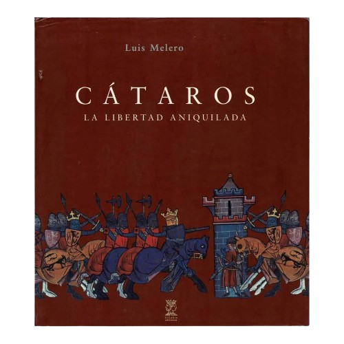

En esta página de mi sitio web llevo un registro de todas mis lecturas, lo que incluye libros de ficción o no, artículos académicos, ensayos, etcétera.
La lectura es un aspecto muy importante en mi vida, tanto a nivel de ocio como de formación.
Como dice un antiguo proverbio japonés: «Lee libros y aumentará tu sabiduría (書を読んで智を増す)».

El Rey Arturo y los caballeros de la tabla redonda
De Pablo Mañé Garzón. Publicado en 1990
Lectura terminada el 16 de Noviembre de 2025
Ficción
Materia de Bretaña

Cátaros: la libertad aniquilada
De Luis Melero. Publicado en 2007
Lectura terminada el 7 de Noviembre de 2025
No ficción
Historia
Cátaros

El maestro del Prado
De Javier Sierra. Publicado en 2013
Lectura terminada el 18 de Octubre de 2025
Ficción
Miserio

La noche
De Guy de Maupassant. Publicado en 1887
Lectura terminada el 16 de Octubre de 2025
Ficción
Terror
Ensayo

Luces de bohemia
De Valle-Inclán. Publicado en 1920
Lectura terminada el 9 de Octubre de 2025
Ficción
Esperpento

Bloodborne I: La muerte del sueño
De Ales Kot Piotv. Publicado en 2019
Lectura terminada el 5 de Octubre de 2025
Ficción
Gótico
Cómic

El entierro de las ratas
De Bram Stoker. Publicado en 1928
Lectura terminada el 4 de Octubre de 2025
Ficción
Terror

El cuarto mono
De J. D. Barker. Publicado en 2017
Lectura terminada el 2 de Octubre de 2025
Ficción
Thiller